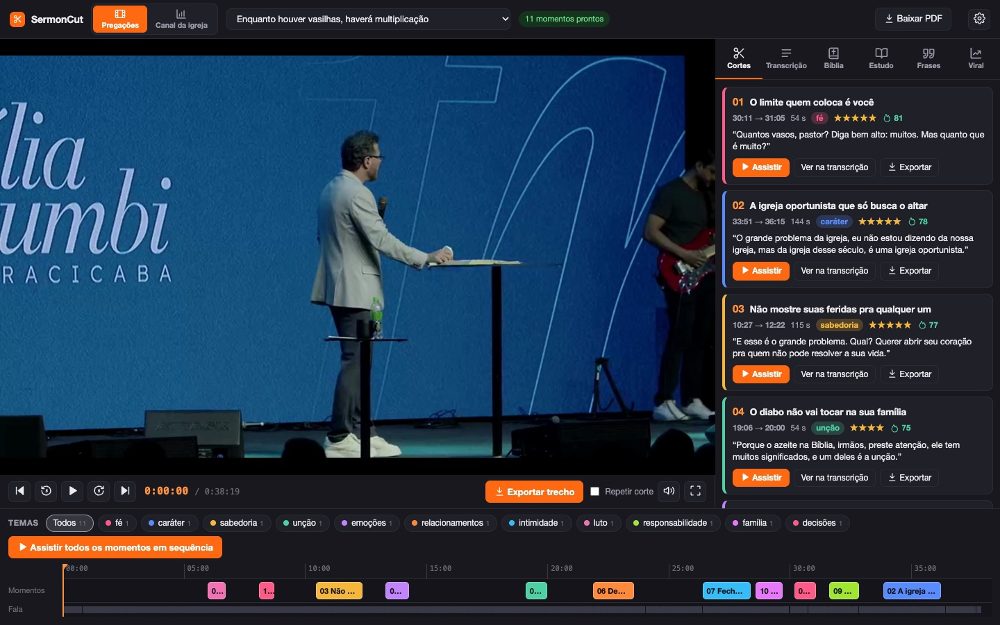
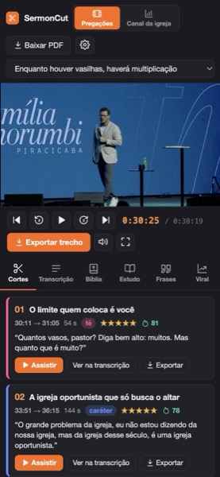

Solte o vídeo do culto. O SermonCut transcreve a pregação, encontra os momentos que rendem cortes, monta o estudo e mostra quais têm mais chance de viralizar.

Exemplo real: pregação “Enquanto houver vasilhas, haverá multiplicação”, Igreja Família Morumbi (Piracicaba)
Você não precisa assistir a pregação inteira de novo para achar os momentos fortes.
Arraste o arquivo do culto, cole um link do Google Drive ou do YouTube.
A pregação é transcrita no seu computador e a IA separa de 8 a 12 cortes, cada um com gancho e tema.
Assista, ajuste e baixe o corte já recortado, em até 4K, pronto para editar.
Uma tela de edição com o vídeo, a transcrição clicável e a linha do tempo. E muito conteúdo pronto para usar.
Momentos de até 2:59 com gancho, tema e o porquê de cada um.
A pregação inteira. Clique numa frase e o vídeo vai para ela.
Todas as passagens citadas, com o minuto em que aparecem.
Resumo, lições, perguntas para célula e devocional de 5 dias.
Frases de efeito para legendas, thumbnails e carrosséis.
Uma nota para cada corte pelo que Reels, TikTok e Shorts priorizam.
O trecho recortado em 720p, 1080p ou 4K, de 24 a 60 fps.
O que mais performou no YouTube da igreja e ideias para cada rede.
Telas reais, com cultos e o canal da Igreja Família Morumbi.
Os 11 cortes da pregação na linha do tempo, separados por tema. Clique em um e assista.
Com o SermonCut aberto no computador, o celular entra pelo Wi‑Fi e vira um app na tela de início.

A transcrição, o player e a exportação são grátis e rodam no seu computador. Para as análises, você escolhe:
Totalmente automático, com limite diário. Só criar uma chave grátis.
O app copia o pedido, você cola no chat e traz a resposta de volta.
Automático, usando a sua assinatura ou chave de API.
Instala sozinho em uns 5 minutos e se atualiza com um clique quando sai versão nova.
Você está no celular. O SermonCut é instalado no computador, que faz o trabalho pesado. Mande o link para você e abra no Mac ou PC.
Chip Apple (M1 ou mais novo), Google Chrome e 3 GB livres.
Windows 10 ou 11 (64 bits) e 3 GB livres.
Código aberto e todas as versões no GitHub.
O SermonCut acha os melhores momentos. A finalização eu faço para você:
Cortes de pregação finalizados por mim. Arraste para o lado para ver todos.
Como editor, percebi que não existia nada feito especificamente para quem faz cortes de pregação da sua igreja local. O SermonCut nasceu para ajudar quem trabalha com isso, ou quem quer servir a própria igreja criando conteúdo. Hoje faço parte da Igreja Família Morumbi, liderada pelos apóstolos Cesar e Carla Graciane.
Sim. O app é grátis. A transcrição e a exportação rodam no seu computador sem custo, e dá para usar uma IA grátis (Gemini ou a sua conta grátis do ChatGPT, Claude ou DeepSeek) nas análises.
Não. Ele encontra os momentos e entrega o trecho recortado. Se quiser o corte com legenda, música e efeitos, dá para pedir a finalização pelo botão Quero finalizado.
Não. Tudo roda no seu computador. Só o texto da transcrição vai para a IA que você escolher, e as suas chaves ficam guardadas só com você.
O app é instalado no Mac ou no Windows. Depois, o celular acessa pelo Wi‑Fi para ver os cortes, ler o estudo, copiar frases e baixar cortes.
Depende do computador e do tamanho do vídeo. Num computador comum, uma pregação de 1 hora fica pronta em alguns minutos, sem você precisar acompanhar.
O SermonCut avisa quando sai versão nova e atualiza com um clique. Seus vídeos, cortes e configurações continuam como estão.